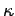
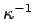
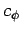

Next: Bibliography
Up: memd
Previous: Self-energy
Rottler and Maggs [3] suggest another subtraction
scheme which has the nice property of introducing another optimization
parameter  into the method. Essentially, interactions up to
the length scale  are done in real space, while only the
residual long-range part beyond is treated via the
dynamics. A scalar field that couples to the interpolated charges via the energy functional
where is the charge density, leads to an effective interaction between particles of the form
In the algorithm the field obeys the equation of motion
where  is another dynamical parameter of dimension velocity. Currently is equal to the speed of light.
In our algorithm we use Yukawa screening to resolve interparticle
interactions on a local scale, such that larger spacings are
feasible. In the method we subtract the self-energy for both the
screened and the unscreened interaction separately by the respective
exact lattice Green's function. Finally, the Yukawa potential is
corrected at short distances by adding an extra analytic Yukawa
potential (with opposite sign) to the truncated Lennard-Jones
potential.
Next: Bibliography
Up: memd
Previous: Self-energy
Igor Pasichnyk
2004-09-07